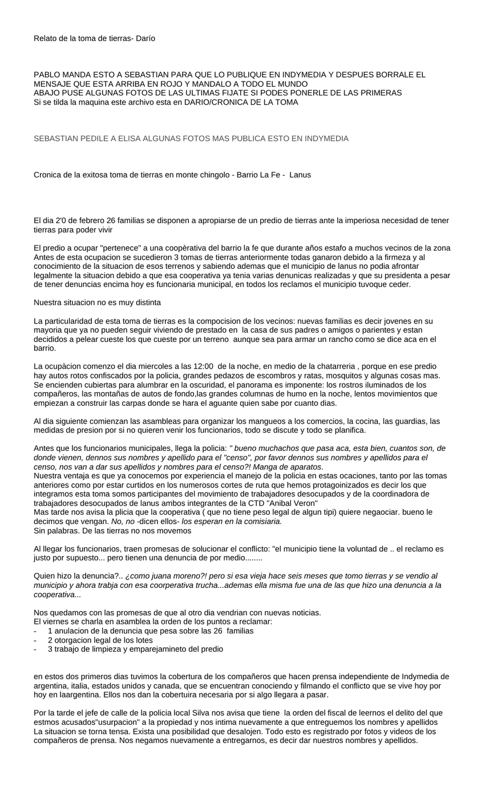

Primera hoja de cronica de la toma .doc. Clic en la imagen para abrir o descargar el archivo original.·29.5 KB·2 hojas, la imagen muestra la primera

Relato de la toma de tierras- Darío
PABLO MANDA ESTO A SEBASTIAN PARA QUE LO PUBLIQUE EN INDYMEDIA Y DESPUES BORRALE EL MENSAJE QUE ESTA ARRIBA EN ROJO Y MANDALO A TODO EL MUNDO
Si se tilda la maquina este archivo esta en DARIO/CRONICA DE LA TOMA
Cronica de la exitosa toma de tierras en monte chingolo - Barrio La Fe - Lanus
El dia 2'0 de febrero 26 familias se disponen a apropiarse de un predio de tierras ante la imperiosa necesidad de tener tierras para poder vivir
El predio a ocupar "pertenece" a una coopèrativa del barrio la fe que durante años estafo a muchos vecinos de la zona
Antes de esta ocupacion se sucedieron 3 tomas de tierras anteriormente todas ganaron debido a la firmeza y al conocimiento de la situacion de esos terrenos y sabiendo ademas que el municipio de lanus no podia afrontar legalmente la situacion debido a que esa cooperativa ya tenia varias denunicas realizadas y que su presidenta a pesar de tener denuncias encima hoy es funcionaria municipal, en todos los reclamos el municipio tuvoque ceder.
Nuestra situacion no es muy distinta
La particularidad de esta toma de tierras es la compocision de los vecinos: nuevas familias es decir jovenes en su mayoria que ya no pueden seguir viviendo de prestado en la casa de sus padres o amigos o parientes y estan decididos a pelear cueste los que cueste por un terreno aunque sea para armar un rancho como se dice aca en el barrio.
La ocupàcion comenzo el dia miercoles a las 12:00 de la noche, en medio de la chatarreria , porque en ese predio hay autos rotos confiscados por la policia, grandes pedazos de escombros y ratas, mosquitos y algunas cosas mas.
Se encienden cubiertas para alumbrar en la oscuridad, el panorama es imponente: los rostros iluminados de los compañeros, las montañas de autos de fondo,las grandes columnas de humo en la noche, lentos movimientos que empiezan a construir las carpas donde se hara el aguante quien sabe por cuanto dias.
Al dia siguiente comienzan las asambleas para organizar los mangueos a los comercios, la cocina, las guardias, las medidas de presion por si no quieren venir los funcionarios, todo se discute y todo se planifica.
Antes que los funcionarios municipales, llega la policia: " bueno muchachos que pasa aca, esta bien, cuantos son, de donde vienen, dennos sus nombres y apellido para el "censo", por favor dennos sus nombres y apellidos para el censo, nos van a dar sus apellidos y nombres para el censo?! Manga de aparatos.
Nuestra ventaja es que ya conocemos por experiencia el manejo de la policia en estas ocaciones, tanto por las tomas anteriores como por estar curtidos en los numerosos cortes de ruta que hemos protagoinizados es decir los que integramos esta toma somos participantes del movimiento de trabajadores desocupados y de la coordinadora de trabajadores desocupados de lanus ambos integrantes de la CTD "Anibal Veron"
Mas tarde nos avisa la plicia que la cooperativa ( que no tiene peso legal de algun tipi) quiere negaociar. bueno le decimos que vengan. No, no -dicen ellos- los esperan en la comisiaria.
Sin palabras. De las tierras no nos movemos
Al llegar los funcionarios, traen promesas de solucionar el conflicto: "el municipio tiene la voluntad de .. el reclamo es justo por supuesto... pero tienen una denuncia de por medio........
Quien hizo la denuncia?.. ¿como juana moreno?! pero si esa vieja hace seis meses que tomo tierras y se vendio al municipio y ahora trabja con esa coorperativa trucha...ademas ella misma fue una de las que hizo una denuncia a la cooperativa...
Nos quedamos con las promesas de que al otro dia vendrian con nuevas noticias.
El viernes se charla en asamblea la orden de los puntos a reclamar:
1 anulacion de la denuncia que pesa sobre las 26 familias
2 otorgacion legal de los lotes
3 trabajo de limpieza y emparejamineto del predio
en estos dos primeros dias tuvimos la cobertura de los compañeros que hacen prensa independiente de Indymedia de argentina, italia, estados unidos y canada, que se encuentran conociendo y filmando el conflicto que se vive hoy por hoy en laargentina. Ellos nos dan la cobertuira necesaria por si algo llegara a pasar.
Por la tarde el jefe de calle de la policia local Silva nos avisa que tiene la orden del fiscal de leernos el delito del que estmos acusados"usurpacion" a la propiedad y nos intima nuevamente a que entreguemos los nombres y apellidos
La situacion se torna tensa. Exista una posibilidad que desalojen. Todo esto es registrado por fotos y videos de los compañeros de prensa. Nos negamos nuevamente a entregarnos, es decir dar nuestros nombres y apellidos.
Hacemos una nueva asamblea y planificamos como nos defendemos ante esta nueva situacion. Lo primero es mostrar una reaccion desde adentro, agamos barricadas en el frente y en el fondo- dicen unos-. Se hacen las barricadas. Llamemos a otros movimientos hermanos para que vean que no estamos solos y llamemos tambien a algun abogado dijerosn otros. Se hace el llamado solidario y apelamos a los recursos legales.
Preparando nuestra respuesta estabamos cuando uno de los compañeros que ponia alambres de pua en el frente es intimidado por un policia: "deja eso por que vas a tener problemas... - yo no dejo nada - ... deja eso pendejo de mierda por que te bajo- ...APUNTANDO CON SU ARMA 9mm AL JOVEN y retirandose al patrullero despues procedio a apuntar a todas las carpas CON LASSER INFRARROJO.
Momentos despues caen los compañeros del MTD de Solano y posteriormente los del MTD de Alte Brown.
El jefe de la policia con cara de preocupacion pregunta quien lllamo al abogado y que pasa que hay tanta gente que viene
Estamos preocupados nos acaban de acusar de usurpadosres y despues nos apuntan con el laser del arma quei se piensan que son sutedes .... lso que queremos son las tierras nos somos delincuentes.... hijos de puta
Policia: Bueno todo en orden, aca no pasa nada, cada uno en sus posiciones
Ocupas: Que no va a pasar nada si nos acaban de apuntar con la "9" y el laser... miren que estan todos escrachados ... que no amenzes si los unicos que amenazaron fueron ustedes
Por fin se dan cuenta SOMOS POCOS PERO NO BOLUDOS.
Paso el fin de semana y el lunes al no tener repsuestas nuevamente en asamblea se planifica una serie de medidas de protesta:
La medida consiste en un plan de tres partes:
A - preparar una supuesta movilizacion, traemos gomas, bombos y redoblantes. El llamdo anonimo de un vecino preocupado, nuestro llamado luego anunciando que si en media hora no responden nos movilizamos
B - efectuar cortes breves en la zona en distintas partes que muestren nuestra presencia y que les moleste
C - incendiar todos los autos chatarra que se encuentren en el predio.
No hizo falta recurrir al plan B ni al C en 5 minutos despues de nuestro anuncio estan llamando muy nerviosos y en 30 minutos se hacen presentes.
Se da respuesta a los tres puntos antes mencionados agregandole el tema de la comida. Se resuelve que se anulara la denuncia una vez hecchos los planos, se otorgaran los terrenos a cada familia y se trabajara sobre la tierra. Quedan alguinas dudas todavia.
Esos fueron los primeros 5 dias de una toma de tierras en el barrio La Fe, Monte chingolo, partido de lanus, una de la pocas toma de tierras que no fue desalojada, porque en la primer semana extraordinariamente se sucedieron diversas tomas de tierras y la mayoria fueron desalojadas, por nombrar dos casos en fiorito y en varela
En las dos semanas siguientes hubieron llamados porque no venian, que carajo pasa que esta todo y no esta nada. Se fue al municipio El martes 12 recien toma forma todo debido a las distintas preciones , se muestran los planos, la denuncia esta anulada y ya contrataron las maquinas para venir a trabajar, hasta una especie de esrcituracion sera otorgada a los vecinos.
Fueron tres semanas de aguante el barro, la lluvia y la mucha necesidad que ganamos. Pero todavia seguiran porque el trabajo de las maquinas lleva tiempo, con la tierra lista igual no hay vivienda digna donde vivir , hay ratas en mediuo de la chatarra y no hay luz ni agua corriente todavia, falta mucho por resolver, pero ya tenemos uno de nuestros derechos fundamentales conquistados a traves de la lucha, con organización con planificacion con la particiacion de todos en las asambleas y todo esto por nuestra iniciativa sin confiar ni mendigar a los gobernantes confiando solamente en nuestra propia fuerza y totalmente convencidos de que para lograrlo debiamos demostrar firmeza para conseguir como ya lo dijimos cueste los que cueste nuestro derecho.
Desde la Toma de tierras en el barrio la fe. Monte chingolo - lanus
Mtd Lanus- Prensa
Transcripción del documento original cronica de la toma .doc. Se conserva la ortografía del original.